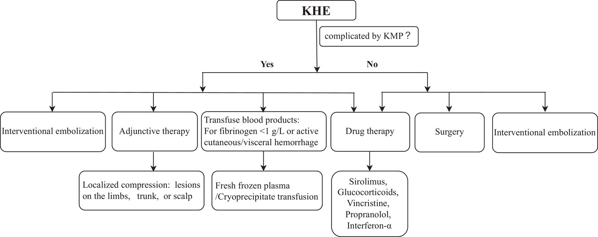

小玫瑰的醫療旅程
向下捲動，探索血管腫瘤的診斷、臨床困境、目的導向治療，並親身體驗醫病溝通的多輪決策。
01 / 診斷分析
綜合小玫瑰的臨床表現與切片/超音波結果，初步診斷為：
右臉 Port-wine birthmarks (PWB)
酒色斑 / 葡萄酒色痣
- 性質：微血管畸形
- 外觀：出生即有，平坦紅斑
- 預後：會隨年齡按比例放大，未來可能變厚或產生結節。
- SWS 警訊：需高度懷疑是否合併 Sturge-Weber syndrome (大腦與眼部微血管畸形)，可能引發癲癇與青光眼。
右腿 Kaposiform hemangioendothelioma (KHE)
卡波西樣血管內皮瘤
- 性質：罕見局部侵襲性腫瘤
- 外觀：紫紅色淤血狀斑塊伴隨腫脹，表面溫度偏高。
- 危機：抽血發現「血小板偏低」，高度暗示致命併發症。
02 / 臨床危機與數據
Kasabach-Merritt Phenomenon (KMP)
KHE 腫瘤最致命的併發症，屬於一種「消耗性凝血病變 (Consumption coagulopathy)」。
血小板低下 (Thrombocytopenia)
異常血管結構會「捕捉」並活化血小板，導致全身血小板快速消耗至極低水平。
凝血因子消耗 (Hypofibrinogenemia)
纖維蛋白原大量消耗，D-dimer 升高，全身出血風險劇增。
🤔 照護困境：血品輸注指引 (2026 最新實證)
家屬直覺：數字太低了，趕快輸血小板補充！
實證醫學指引：
- 血小板 (Platelets)：絕對不應常規輸注。輸入的血小板會被腫瘤立刻吞噬並釋放血管新生因子，加劇腫瘤腫脹（火上加油），僅在活動性大出血或術前才給予。
- 冷沉澱品 (Cryoprecipitate)：當纖維蛋白原 (Fibrinogen) < 1.0 g/L 時給予。
- 紅血球 (PRBC)：用於嚴重貧血 (Hb < 60-70 g/L)。
03 / 目的導向治療方針
選擇我們目前的臨床目標，查看對應的治療策略：
首選策略：Sirolimus (西羅莫司)
為何選用：這是一種 mTOR 抑制劑，能強效阻斷血管與淋巴管生成，是目前國際指引改善 KMP 凝血功能的首選。
衛教重點：此為口服藥免打針，但具有免疫抑制副作用。家屬需特別注意感染風險，預防肺囊蟲肺炎，並避免接種活毒疫苗。
傳統化療藥物。缺點是必須打「中央靜脈導管」，若漏針會造成嚴重組織壞死（呼應教案中手部冰冷腫脹的事件）。
首選策略：全身性皮質類固醇
為何選用：強效抗發炎，初期合併 Sirolimus 使用能迅速穩定腫瘤。
衛教重點：目標是短期使用，待穩定後逐漸減量 (Weaning)。
首選策略：Aspirin (阿斯匹靈)
為何選用：抗血小板藥物，防止血小板在腫瘤內繼續聚集，打破 KMP 的惡性循環。
衛教重點：密切監測是否有腸胃道等出血徵兆。
首選策略：脈衝染料雷射 (PDL)
為何選用：針對右臉的酒色斑。早期（嬰兒期）介入效果最顯著。
衛教重點：需向父母解釋這是長期抗戰，病灶會淡化但極難完全消失。
首選策略：低劑量 Aspirin + 症狀控制用藥
為何選用：UpToDate 強烈建議所有 SWS 嬰幼兒及早使用低劑量 Aspirin 以預防缺血性腦傷與中風。若發生癲癇，則需投以抗癲癇藥物；若併發青光眼，需即時使用降眼壓藥水。
衛教重點：除了腿部的凝血危機，家長必須了解「看見皮膚，要想著大腦」的觀念。SWS 是一場長期的神經與視力保衛戰。
非藥物策略：局部壓迫、動脈栓塞與手術
局部壓迫 (Local Compression)：針對四肢的 KHE (如小玫瑰的右腿)，透過物理壓迫阻斷血流，能誘發腫瘤細胞缺氧凋亡，是絕佳的中期輔助手段。
經動脈栓塞 (TAE)：用於危及生命的 KMP 或術前準備，能快速減少腫瘤血流並提升血小板。但極易產生側支循環，不能單獨使用，必須搭配藥物。
手術切除：僅限「無併發 KMP 且小而侷限」的病灶，因切除不全復發率高 (15%) 且有大出血風險。
KHE 治療指引流程圖
此為國際指引與最新文獻 (Tian 2026) 所建議之 KHE 治療決策流程，涵蓋藥物與非藥物的全方位策略：

04 / 藥物百科
點擊藥物卡片查看詳細機轉與副作用
Sirolimus
西羅莫司 (mTOR 抑制劑)
Corticosteroids
全身性皮質類固醇
Vincristine
長春新鹼 (化療藥物)
Aspirin
阿斯匹靈 (抗血小板藥物)
Antiseizure Meds
抗癲癇藥物 (SWS神經保護)
Anti-glaucoma Drops
抗青光眼藥水 (SWS視力保護)
05 / 醫病溝通情境模擬 (多輪決策)
小玫瑰在加護病房，右腿腫脹紫紅，血小板急遽下降。家屬因為先前的「漏針事件」情緒激動。
這是一個三回合的對話模擬，每一個決定都會影響下一步，請選擇您的視角：
扮演 主治醫師
目標：說服家屬接受新藥，化解危機。
扮演 志明與春嬌
目標：在恐懼中為女兒做出正確抉擇。
06 / 最適當治療計畫流程圖
整合上述決策，以下為針對小玫瑰「右腿 KHE 合併 KMP」的標準臨床流程：
1. 診斷與危機確認
確診 KHE，且血小板極低 (<60k)，確診併發 KMP。
2. 絕對禁忌事項
禁止常規輸注血小板！
避免刺激腫瘤快速長大與更多消耗。
3. 啟動第一線合併藥物治療
口服 Sirolimus + 全身性皮質類固醇
(並給予預防性抗生素防止肺炎)
4a. 治療有效 (KHE 縮小)
逐漸減量停用類固醇，
維持口服 Sirolimus 兩年。
4b. 治療無效或惡化
啟動第二線治療：加入 Vincristine 或考慮動脈栓塞。
& 5. SWS 支線：長期神經與眼科追蹤
針對右臉 PWB，給予**低劑量 Aspirin** 預防中風。
若出現癲癇或青光眼，隨時啟動專科症狀控制。